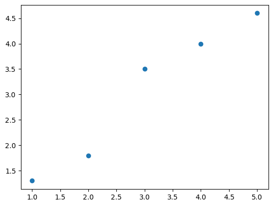
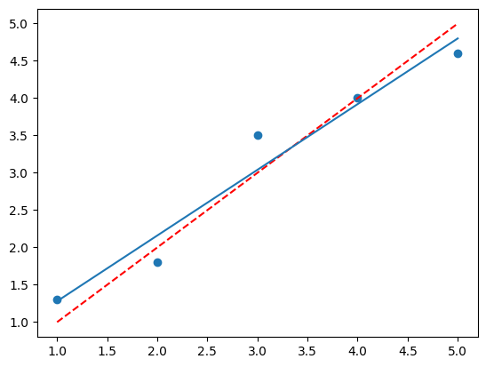
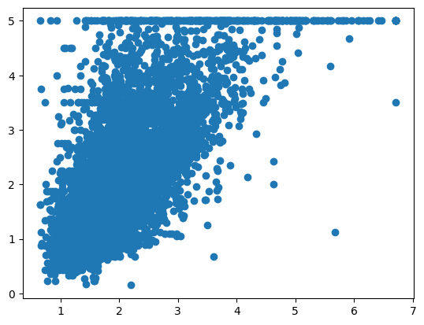
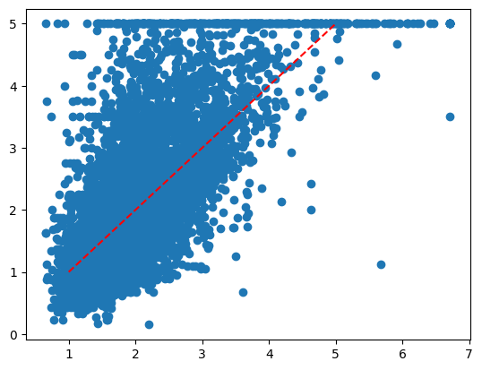

A Regressão Linear#
Se temos um conjunto de pontos como o mostrado abaixo, podemos traçar qualquer reta que passa por esses pontos
Nesse caso, vamos traçar uma reta y = x
Infinitas retas podem ser traçadas, mas qual seria a melhor reta que passa por esses pontos?
a melhor reta: o que seria “melhor”?
Para definir esse conceito podemos, por exemplo, verificar a distância de cada ponto a essa reta vermelha e escolher baseado nessa distância
A regressão vai traçar essa reta de forma a minimizar a soma dos erros ao quadrado, segundo a própria documentação
# Podemos considerar esses dados abaixo
import pandas as pd
dados = pd.DataFrame({
'X': [1,2,3,4,5],
'Y': [1.3,1.8,3.5,4,4.6]
})
dados.head(2)
| X | Y | |
|---|---|---|
| 0 | 1 | 1.3 |
| 1 | 2 | 1.8 |
# Visualizando esses pontos graficamente, podemos traçar uma reta que passa por esse pontos
import matplotlib.pyplot as plt
fig,ax = plt.subplots()
ax.scatter(dados.X,dados.Y)
plt.show()

# Nessa reta vermelha, fizemos que y = x, então podemos escrever o y_reta como
dados['y_reta'] = dados.X
dados.head(3)
| X | Y | y_reta | |
|---|---|---|---|
| 0 | 1 | 1.3 | 1 |
| 1 | 2 | 1.8 | 2 |
| 2 | 3 | 3.5 | 3 |
Vamos usar a regressão linear para traçar a melhor reta que passa por esses pontos
# Importando a regressão linear
from sklearn.linear_model import LinearRegression
# Criando o regressor
reg = LinearRegression().fit(dados.X.values.reshape(-1,1),dados.Y)
# Visualizando o coeficiente angular
reg.coef_
array([0.88])
a = reg.coef_[0]
# e o coeficiente linear
b = reg.intercept_
# Visualizando graficamente
fig,ax = plt.subplots()
ax.scatter(dados.X,dados.Y)
ax.plot(dados.X,dados.y_reta,'--r')
x = dados.X.values
y = a*x+b
ax.plot(x,y)
plt.show()

# Fazendo a previsão e adicionando na base
dados['y_pred'] = reg.predict(dados.X.values.reshape(-1,1))
dados.head(3)
| X | Y | y_reta | y_pred | |
|---|---|---|---|---|
| 0 | 1 | 1.3 | 1 | 1.28 |
| 1 | 2 | 1.8 | 2 | 2.16 |
| 2 | 3 | 3.5 | 3 | 3.04 |
# Calculando o erro da reta vermelha e da regressão
dados['erro_reta'] = (dados.Y - dados.y_reta)**2
dados['erro_pred'] = (dados.Y - dados.y_pred)**2
# Verificando essa base e a soma do erro
dados.head()
| X | Y | y_reta | y_pred | erro_reta | erro_pred | |
|---|---|---|---|---|---|---|
| 0 | 1 | 1.3 | 1 | 1.28 | 0.09 | 0.0004 |
| 1 | 2 | 1.8 | 2 | 2.16 | 0.04 | 0.1296 |
| 2 | 3 | 3.5 | 3 | 3.04 | 0.25 | 0.2116 |
| 3 | 4 | 4.0 | 4 | 3.92 | 0.00 | 0.0064 |
| 4 | 5 | 4.6 | 5 | 4.80 | 0.16 | 0.0400 |
#Verificando a soma do erro
dados[['erro_reta','erro_pred']].sum()
erro_reta 0.540
erro_pred 0.388
dtype: float64
Pdemos utilizar o erro médio absoluto e o erro médio quadrático do próprio scikit-learn para calcular esses erros
# Além disso, também podemos usar o erro médio absoluto e o erro médio quadrático do próprio scikit-learn
from sklearn.metrics import mean_squared_error
from sklearn.metrics import mean_absolute_error
# Visualizando o resultado da previsão
print(mean_absolute_error(dados.Y,dados.y_reta))
print(mean_squared_error(dados.Y,dados.y_reta))
print(mean_absolute_error(dados.Y,dados.y_pred))
print(mean_squared_error(dados.Y,dados.y_pred))
0.2800000000000001
0.10800000000000005
0.22400000000000003
0.07760000000000003
Usando a Regressão Linear de forma prática#
Vamos utilizar o dataset de casas da Califórnia
# Importando o dataset
from sklearn.datasets import fetch_california_housing
data = fetch_california_housing()
# Visualizando
data
{'data': array([[ 8.3252 , 41. , 6.98412698, ..., 2.55555556,
37.88 , -122.23 ],
[ 8.3014 , 21. , 6.23813708, ..., 2.10984183,
37.86 , -122.22 ],
[ 7.2574 , 52. , 8.28813559, ..., 2.80225989,
37.85 , -122.24 ],
...,
[ 1.7 , 17. , 5.20554273, ..., 2.3256351 ,
39.43 , -121.22 ],
[ 1.8672 , 18. , 5.32951289, ..., 2.12320917,
39.43 , -121.32 ],
[ 2.3886 , 16. , 5.25471698, ..., 2.61698113,
39.37 , -121.24 ]], shape=(20640, 8)),
'target': array([4.526, 3.585, 3.521, ..., 0.923, 0.847, 0.894], shape=(20640,)),
'frame': None,
'target_names': ['MedHouseVal'],
'feature_names': ['MedInc',
'HouseAge',
'AveRooms',
'AveBedrms',
'Population',
'AveOccup',
'Latitude',
'Longitude'],
'DESCR': '.. _california_housing_dataset:\n\nCalifornia Housing dataset\n--------------------------\n\n**Data Set Characteristics:**\n\n:Number of Instances: 20640\n\n:Number of Attributes: 8 numeric, predictive attributes and the target\n\n:Attribute Information:\n - MedInc median income in block group\n - HouseAge median house age in block group\n - AveRooms average number of rooms per household\n - AveBedrms average number of bedrooms per household\n - Population block group population\n - AveOccup average number of household members\n - Latitude block group latitude\n - Longitude block group longitude\n\n:Missing Attribute Values: None\n\nThis dataset was obtained from the StatLib repository.\nhttps://www.dcc.fc.up.pt/~ltorgo/Regression/cal_housing.html\n\nThe target variable is the median house value for California districts,\nexpressed in hundreds of thousands of dollars ($100,000).\n\nThis dataset was derived from the 1990 U.S. census, using one row per census\nblock group. A block group is the smallest geographical unit for which the U.S.\nCensus Bureau publishes sample data (a block group typically has a population\nof 600 to 3,000 people).\n\nA household is a group of people residing within a home. Since the average\nnumber of rooms and bedrooms in this dataset are provided per household, these\ncolumns may take surprisingly large values for block groups with few households\nand many empty houses, such as vacation resorts.\n\nIt can be downloaded/loaded using the\n:func:`sklearn.datasets.fetch_california_housing` function.\n\n.. rubric:: References\n\n- Pace, R. Kelley and Ronald Barry, Sparse Spatial Autoregressions,\n Statistics and Probability Letters, 33 (1997) 291-297\n'}
# Transformando em um DataFrame
casas = pd.DataFrame(data.data)
# Visualizando o dataframe
casas
| 0 | 1 | 2 | 3 | 4 | 5 | 6 | 7 | |
|---|---|---|---|---|---|---|---|---|
| 0 | 8.3252 | 41.0 | 6.984127 | 1.023810 | 322.0 | 2.555556 | 37.88 | -122.23 |
| 1 | 8.3014 | 21.0 | 6.238137 | 0.971880 | 2401.0 | 2.109842 | 37.86 | -122.22 |
| 2 | 7.2574 | 52.0 | 8.288136 | 1.073446 | 496.0 | 2.802260 | 37.85 | -122.24 |
| 3 | 5.6431 | 52.0 | 5.817352 | 1.073059 | 558.0 | 2.547945 | 37.85 | -122.25 |
| 4 | 3.8462 | 52.0 | 6.281853 | 1.081081 | 565.0 | 2.181467 | 37.85 | -122.25 |
| ... | ... | ... | ... | ... | ... | ... | ... | ... |
| 20635 | 1.5603 | 25.0 | 5.045455 | 1.133333 | 845.0 | 2.560606 | 39.48 | -121.09 |
| 20636 | 2.5568 | 18.0 | 6.114035 | 1.315789 | 356.0 | 3.122807 | 39.49 | -121.21 |
| 20637 | 1.7000 | 17.0 | 5.205543 | 1.120092 | 1007.0 | 2.325635 | 39.43 | -121.22 |
| 20638 | 1.8672 | 18.0 | 5.329513 | 1.171920 | 741.0 | 2.123209 | 39.43 | -121.32 |
| 20639 | 2.3886 | 16.0 | 5.254717 | 1.162264 | 1387.0 | 2.616981 | 39.37 | -121.24 |
20640 rows × 8 columns
#Colocando nome nas colunas
casas.columns = data.feature_names
casas['MedHouseVal'] = data.target
casas
| MedInc | HouseAge | AveRooms | AveBedrms | Population | AveOccup | Latitude | Longitude | MedHouseVal | |
|---|---|---|---|---|---|---|---|---|---|
| 0 | 8.3252 | 41.0 | 6.984127 | 1.023810 | 322.0 | 2.555556 | 37.88 | -122.23 | 4.526 |
| 1 | 8.3014 | 21.0 | 6.238137 | 0.971880 | 2401.0 | 2.109842 | 37.86 | -122.22 | 3.585 |
| 2 | 7.2574 | 52.0 | 8.288136 | 1.073446 | 496.0 | 2.802260 | 37.85 | -122.24 | 3.521 |
| 3 | 5.6431 | 52.0 | 5.817352 | 1.073059 | 558.0 | 2.547945 | 37.85 | -122.25 | 3.413 |
| 4 | 3.8462 | 52.0 | 6.281853 | 1.081081 | 565.0 | 2.181467 | 37.85 | -122.25 | 3.422 |
| ... | ... | ... | ... | ... | ... | ... | ... | ... | ... |
| 20635 | 1.5603 | 25.0 | 5.045455 | 1.133333 | 845.0 | 2.560606 | 39.48 | -121.09 | 0.781 |
| 20636 | 2.5568 | 18.0 | 6.114035 | 1.315789 | 356.0 | 3.122807 | 39.49 | -121.21 | 0.771 |
| 20637 | 1.7000 | 17.0 | 5.205543 | 1.120092 | 1007.0 | 2.325635 | 39.43 | -121.22 | 0.923 |
| 20638 | 1.8672 | 18.0 | 5.329513 | 1.171920 | 741.0 | 2.123209 | 39.43 | -121.32 | 0.847 |
| 20639 | 2.3886 | 16.0 | 5.254717 | 1.162264 | 1387.0 | 2.616981 | 39.37 | -121.24 | 0.894 |
20640 rows × 9 columns
Regressão Linear Simples
# Separando X e Y
X = casas.MedInc
y = casas.MedHouseVal
Separando nossa base em treino e teste para criarmos o modelo
# Separando em treino e teste
from sklearn.model_selection import train_test_split
X_train, X_test, y_train, y_test = train_test_split(X, y, test_size=0.33, random_state=42)
# Usando a regressão linear
reg = LinearRegression().fit(X_train.values.reshape(-1,1),y_train)
# Avaliando o erro
y_pred = reg.predict(X_test.values.reshape(-1,1))
print(mean_absolute_error(y_test,y_pred))
print(mean_squared_error(y_test,y_pred))
0.6265986453094173
0.7028461448540976
# Visualizando a relação do y_test com o y_pred
fig,ax = plt.subplots()
ax.scatter(y_pred,y_test)
plt.show()

Regressão Linear Múltipla
Primeiro fazendo para apenas duas variáveis
# Separando X e Y
X = casas[['MedInc','AveBedrms']]
y = casas.MedHouseVal
# Separando em treino e teste
from sklearn.model_selection import train_test_split
X_train, X_test, y_train, y_test = train_test_split(X, y, test_size=0.33, random_state=42)
# Usando a regressão linear
reg = LinearRegression().fit(X_train,y_train)
# Da mesma forma, também vamos ter o coef_
reg.coef_
array([0.41732849, 0.00059442])
# E o intercept_
reg.intercept_
np.float64(0.44810749063254973)
# Avaliando o erro
y_pred = reg.predict(X_test)
print(mean_absolute_error(y_test,y_pred))
print(mean_squared_error(y_test,y_pred))
0.6266005452778879
0.7028544349993665
#Calculando o R2 score
from sklearn.metrics import r2_score
r2 = r2_score(y_test,y_pred)
#Imprimindo o valor do R2 score
print("R²:",r2)
R²: 0.47256584726797946
# Visualizando a relação do y_test com o y_pred
fig,ax = plt.subplots()
ax.scatter(y_pred,y_test)
ax.plot([1,5],[1,5],'--r')
plt.show()

Podemos voltar e considerar qualquer coluna para o modelo